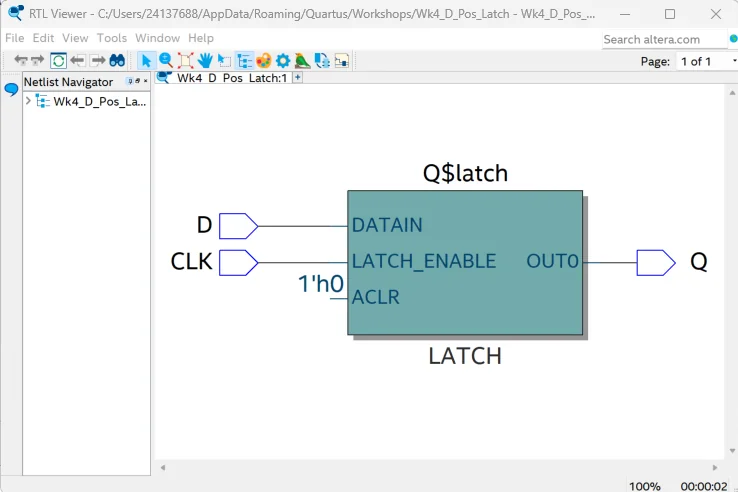
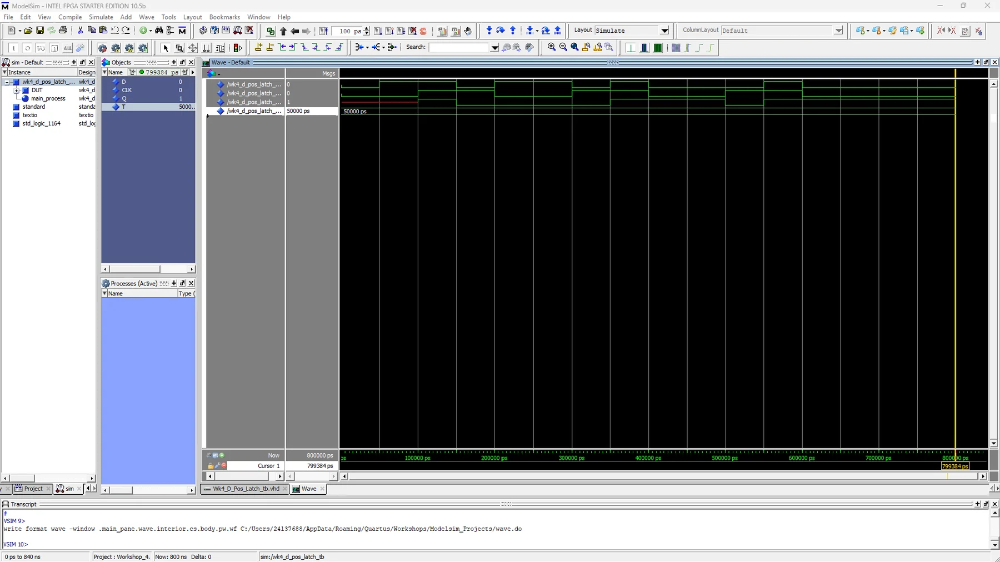
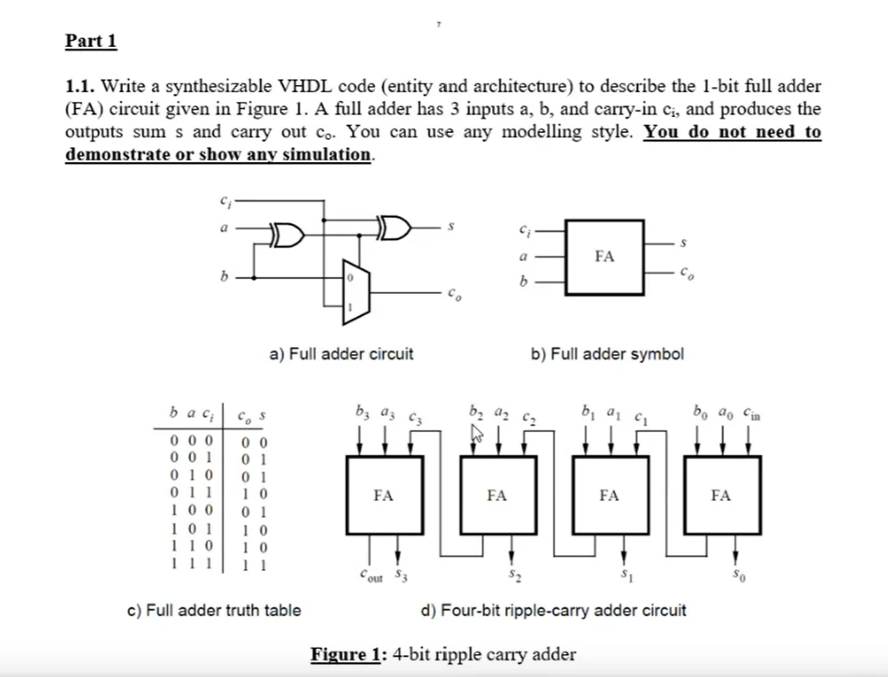

ELEC2311 introduces digital design as a hardware description problem, not just circuit drawing. VHDL is used to describe hardware behaviour which is then synthesised into gate-level netlists by Quartus Prime and programmed onto the DE10-Lite's Cyclone V FPGA. The board runs a 50 MHz onboard clock and exposes switches, push buttons, LEDs, and HEX displays for I/O.
The unit covered three modelling styles — dataflow (concurrent signal assignments), behavioural (processes with sequential logic), and structural (component instantiation). Every design was first verified with a testbench in ModelSim before being targeted to hardware.
Code
Two representative designs — the 7-segment decoder (combinational dataflow/behavioural) and the clock divider (sequential behavioural with a generic). Both target the DE10-Lite's standard port names directly.
library IEEE; use IEEE.STD_LOGIC_1164.ALL; entity top is port ( CLOCK_50 : in STD_LOGIC; SW : in STD_LOGIC_VECTOR(9 downto 0); LEDR : out STD_LOGIC_VECTOR(9 downto 0); HEX0 : out STD_LOGIC_VECTOR(6 downto 0) ); end entity; architecture rtl of top is begin LEDR(3 downto 0) <= SW(3 downto 0); -- mirror switch inputs to LEDs process(all) begin case SW(3 downto 0) is when "0000" => HEX0 <= "1000000"; -- 0 when "0001" => HEX0 <= "1111001"; -- 1 when "0010" => HEX0 <= "0100100"; -- 2 when "0011" => HEX0 <= "0110000"; -- 3 -- ... 0100 through 1111 (A–F) ... when others => HEX0 <= "0001110"; -- F end case; end process; end architecture;
entity Clk_divider_to_1Hz is generic( Freq_in : integer := 50000000 -- 50 MHz onboard clock ); port ( clk_in : in STD_LOGIC; reset : in STD_LOGIC; clk_out : out STD_LOGIC ); end Clk_divider_to_1Hz; architecture Behav of Clk_divider_to_1Hz is signal temp : STD_LOGIC; signal counter : integer; constant N : integer := 2; -- f_out = N/2 Hz begin frequency_divider: process(reset, clk_in) begin if (reset = '1') then temp <= '0'; counter <= 0; elsif rising_edge(clk_in) then if (counter = Freq_in/N) then temp <= NOT(temp); -- toggle output counter <= 0; else counter <= counter + 1; end if; end if; end process; clk_out <= temp; end Behav;
Tools & Flow
The design flow for every module was: write VHDL source → compile in Quartus and check for syntax errors → run synthesis and inspect the RTL Viewer to confirm the inferred hardware matches intent → write a testbench → simulate in ModelSim and check waveforms → if simulation passes, program the DE10-Lite and verify on hardware.
The key insight from this unit: VHDL describes hardware that runs concurrently. A process does not execute sequentially the way a C function does — all processes in an architecture run in parallel, triggered by their sensitivity lists. Getting this mental model right early was the most important thing the unit taught.
Simulation & Synthesis


